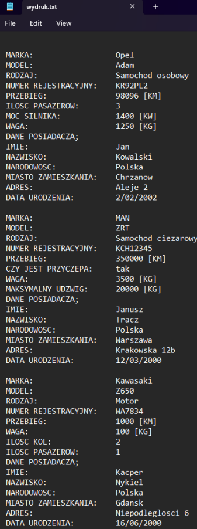

Opis Programu
Program przechowuje zarejestrowane pojazdy w pliku baza.txt. Użytkownik może rejestrować nowe pojazdy, przeglądać już wcześniej zarejestrowane pojazdy, zmieniać właścicieli pojazdów, wyszukiwać kokretne pojazdy i usuwać pojazdy. Możliwe jest również robienie wydruków wybranych pojazdów do pliku wydruk.txt. Program korzysta z wcześniej zapisanych pojazdów, których dane mogą nadpisać automatycznie część cech rejestrowanego pojazdu.Działanie programu
Rejestracja nowego pojazdu;
Po uruchomieniu programu mamy do wyboru 5 opcji;
1. Rejestracja nowego pojazdu
2. Podgląd zarejestrowanych pojazdów
3. Wyszukanie kokretnego pojazdu.
4. Wyszukanie pojazdów danego typu.
5. Wyszukanie pojazdów danego właścieciela
Gdy wybierzemy inną opcje niż jedną z powyższych np. 6 to program się zakończy i wyświetli komunikat.
Po wybraniu opcji nr 1. Będziemy zapytani o rodzaj pojazu, który chcemy zarejestrować.
Po wybraniu opcji np. 1 ukaże się szereg danych do wprowadzenia. Takich jak: marka, model, numer rejestracyjny, przebieg, imię, nazwisko, kraj zamieszkania, miejscowość zamieszkania, ulica, numer, budynku, dzień urodzenia, miesiąc urodzeniam rok urodzenia (dane mogą różnić
w zależności od wcześniejszego wyboru typu pojazdu).

Po wprowadzeniu danych, zostaną one wyświetlone na ekranie, oraz dane zostaną zapisane w
pliku tekstowym baza.txt.
Podgląd zarejestrownych pojazdów;
Gdy dane się zapiszemy program wróci do menu głównego, gdzie będziemy mogli ponownie zarejestrować pojazd, albo wykonać inne czynności jak np po wybraniu opcji nr. 2, gdzie ukażąnam się wszystkie zarejestrowane wcześniej pojazdy.
Następnie program zapyta czy chcemy wydrukować dane i po wpisaniu “TAK” program zapisze
dane w pliku wydruk.txt.

Gdy wpiszemy “NIE” dane się nie zapiszą do pliku. Niezależnie od wybranej opcji program powróci do menu głównego.
Wyszukanie konkretnego pojazdu;
Po wybraniu opcji nr.3 w menu głównym, będziemy mogli wyszukać kokretny pojazdwpisując jego numer rejestracyjny.
Po wprowadzeniu poprawnego numeru rejestracyjnego pokażą się dane pojazdu, oraz akcje, które możemy wykonać. W przeciwnym razie, jeśli numer rejestracyjny będzie niepoprawny, to pokaże się komunikat o niepoprawnych danych I program wróci do menu głównego

Gdy wybierzemy opcje nr.1 dane tego pojazdu zostaną zapisane do pliku wydruk.txt.
Jednak, gdy wybierzemy opcje nr.2. Będziemy poproszeni o wprowadzenie: imienia, nazwiska, narodowości, miasta zamieszkania, ulicy, numeru budynku, dzień urodzenia, miesiąc urodzenia, rok urodzenia.
I dane zostaną podmienione.
Po wybraniu opcji nr.3 pojazd zostanie usunięty.
Gdy wybierzemy opcje nr.4 nic się nie stanie. Niezależnie od wybranej opcji program wróci ostatecznie do menu głównego.
Wyszukanie pojazdów danego typu;
Po wybraniu tej opcji zostaniemy zapytani o typ pojazdów jaki chcemy wyszukać.Gdy wybierzemy np opcje nr.1 ukażą się wszystkie zapisane samochy osobiste.
Następnie zostaniemy zapytani czy chcemy wydrukować dane. Po wpisaniu “TAK” dane zostaną
zapisane w pliku wydruk.txt.
A następnie program powróci do menu głównego.
Wyszukanie pojazdów danego właściciela
Gdy wybierzemy tę opcję, będziemy znaleźć pojazdy danego właściciela po wprowadzeniu danych takich jak: imie, nazwisko, dzień urodzenia, miesiąc urodzenia I rok urodzenia.Po wprowadzeniu danych ukażą nam się pojazdy tego właściciela.
Oraz zostanie wyświetlona lista akcji do zrobienia z tymi danymi.
Po wybraniu opcji nr 1 dane zostaną zapisane do pliku wydruk.txt.
Gdy wybierzemy opcje nr 2 dane zostaną usunięte. Po wybraniu opcji nr 3 nic się nie stanie. Niezależnie od wybranej opcji program powróci do menu głównego.